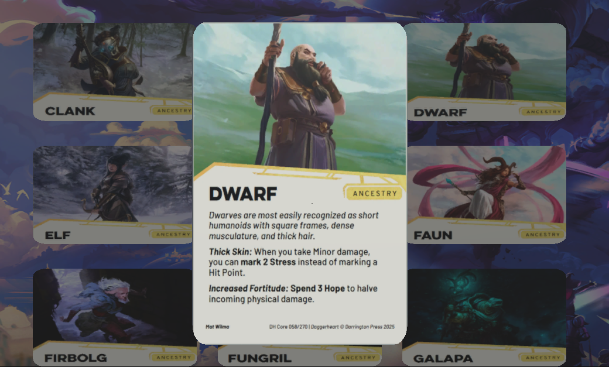

Projects
Through the years I have worked on several projects, from school related to personal ones simply to learn.School project for Blis Digital
For one of our last school projects, we had a Product Owner from an actual company with an actual problem.
Our class was tasked to find the best mechanics to create a mobile declaration app. We had to figure out the best
OCR module to read off the information, a database to save the information to and the best framework to create
this app in.
After doing the necessary research and tests of how well the best frameworks, databases and OCR module's
(according to our research) would work together we ended up with the combination of Kotlin and Firebase,
which has a build in OCR module and database.
My part in this project was to create the Login screen and its functionality as well as the logout functionality.
This project was more about the documentation and research aspect of the life as a Software Developer, so most
of our time was spend writing everything we did out. I helped with documenting and executing all the research,
tests, testing of the app and the technical report.

Book Tracking App
After getting a taste for Kotlin and mobile apps through the Blis Digital school project, I decided to make my own app. As a Book Dragon I own a lot of books, most of which are part of various series. But how do I know which ones I already have and which ones I have read? For this I created the Book Tracking App, where one can add books, add them to their respective series and check off when they're read.
Daggerheart Character Sheet
The idea for this project could not leave my brain after watching Critical Role's youtube video of the conversion from Dungeons and Dragons to Daggerheart of one of their characters.
The reason it is such an interesting idea is because it is so visual, you as a player receive cards for all possible abilities and spells, as well as for your character's race and background.
The project is made in Unity with C#, all the models are made in Blender and made by me.
The user to be able to create a character through various steps, selecting their Race, followed by their background, then their class and their first level domain cards, abilities spells etc.
Once this basic is set, the user can input the character's name, pronouns, the experiences that make this character and the starting Traits for this character as well as adding a starting armor and weapon.
This finishes the Character Creation part.
Then for the Character Sheet part the user should be able to level up their character and everything that comes with, eg pick stats to add to, add new experiences, pick new domain cards and pick a multi class if desired.
For other actions a user should be able to have damage dice be rolled for their weapon on screen, have a deck of their 5 active abilities/spells and access the vault where the remaining cards would be.
They should also be able to change or add new weapons and armor.
As this is a work in progress a user's current abilities would be to go through character creation.
